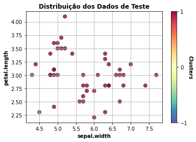

Este é um componente que treina um modelo Isolation Forest usando Scikit-learn.
Scikit-learn é uma biblioteca open source de machine learning que suporta apredizado supervisionado e não supervisionado. Também provê várias ferramentas para ajustes de modelos, pré-processamento de dados, seleção e avaliação de modelos, além de outras funcionalidades.
Espera-se como entrada para o componente uma tabela com colunas que representam valores numéricos, categóricos ou de data. Os valores de data devem ser removidos ou selecionados para codificação ordinal para que o modelo consiga processá-los. A tabela deve ser de um dos seguintes tipos: Comma-separated values (.csv) ou Excel (.xls, .xlsx).
A seguir são listados todos os parâmetros utilizados pelo componente:
- Quantidade máxima de características:
float, padrão:"auto".
O número de características máximo a serem retiradas dos dados para treinar cada estimador de base. - Contaminação:
float, padrão:0.1.
A quantidade de contaminação do conjunto de dados, ou seja, a proporção de outliers no conjunto de dados. - Quantidade máxima de amostras:
float, padrão:1.0.
O número de amostras máximo a serem retiradas dos dados para treinar cada estimador de base. - Gráficos a serem ignorados:
string, {"Dados de Teste","Tabelas de Dados"}.
Considerando a quantidade de gráficos que são retornados ao executar a experimentação, o usuário pode selecionar quais ele não deseja visualizar.
As métricas de performance tem o propósito de ajudar o usuário a avaliar a performance do modelo. Essas métricas variam de acordo com o tipo de problema, tal como: classificação, regressão, agrupamento, entre outros.
- Pontuação de anomalia: considerando que o modelo faz a predição da anomalia, ela mesma é utilizada para avaliar o modelo.
As métricas de performance tem o propósito de ajudar o usuário a avaliar a performance do modelo. Essas métricas variam de acordo com o tipo de problema, tal como: classificação, regressão, agrupamento, entre outros.
- Dados de teste
Apresenta a distribuição dos dados de teste considerando as duas características mais relevantes para o modelo. - Tabela dos dados
Apresenta visualização dos dados após o treinamento do modelo com a variável resposta e dados sobre o modelo.
Tabela com os valores preditos de anomalia.